Префектура Ямагути · Суо-Осима · еда и природа
Суо-Осима: мандариновый остров во Внутреннем море, где переселенцы варят джем и катают на каяках
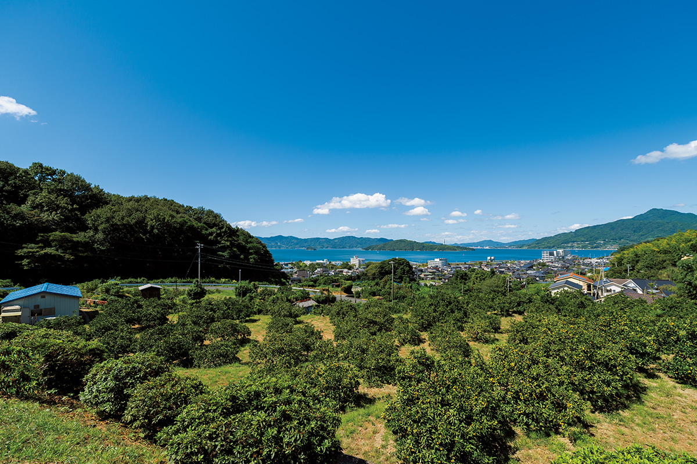
Суо-Осима лежит в западной части Внутреннего Японского моря, и живёт на нём меньше 20 000 человек. Сюда переезжают молодые фермеры, чтобы вместе с местными жителями придумать для острова новую экономику.
Остров
Где боги мешали море
По древней японской хронике «Кодзики», божественная супружеская пара спустилась с неба на плавучий мост, взбаламутила копьём первозданный океан и так породила острова. Суо-Осима упоминается уже в этом мифе о рождении японской земли. Сегодня от токийского аэропорта Ханэда до ближайшего к острову аэропорта лететь полтора часа. Перед посадкой в иллюминаторе видны острова, рассыпанные по синему морю, и если среди них угадывается силуэт рыбы, это он и есть.
Остров, который называют ещё Ясиро, лежит у юго-восточного берега префектуры Ямагути. Его берег тянется примерно на 160 км, а с материком его связывает мост Осима через узкий пролив. В центре поднимаются горы, а их пологие склоны к морю заняты цитрусовыми садами. Мандаринов здесь собирают 80% всего урожая префектуры.
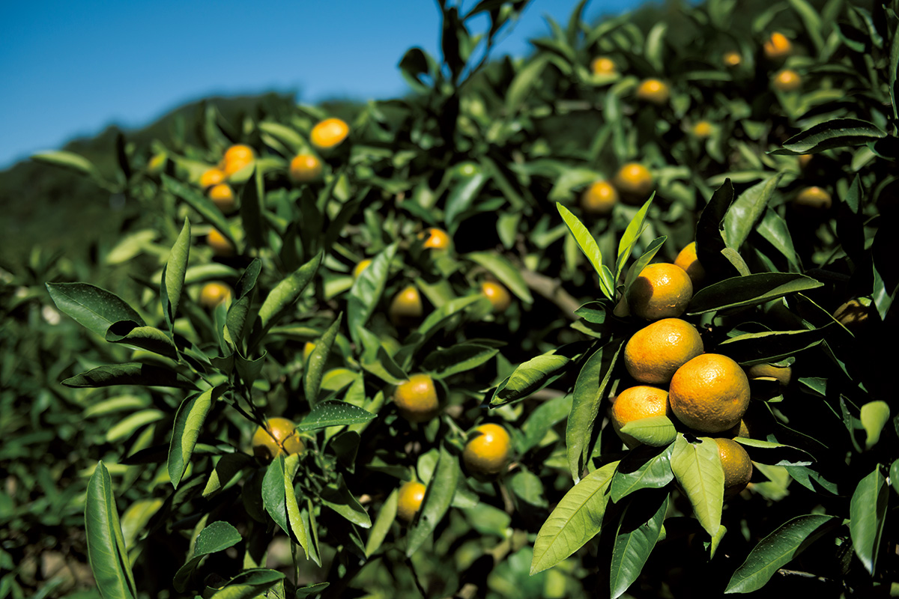
Последние несколько лет на остров переезжают молодые фермеры. Они выращивают фрукты и овощи с минимумом химии, перерабатывают урожай сами и продают уже готовый продукт. Такой подход делает сельское хозяйство выгодным, а сам остров интереснее для гостей.
Причину перемен хозяин местной джемовой мастерской объясняет так: фермеров становится меньше из-за старения, цены на урожай падают, и родители уже не хотят передавать дело детям. Отсюда и пустеющие деревни. Владелец мандаринового сада, который давно работает на острове, говорит так.
«Здесь есть всё: климат, земля. Поэтому нужно понимать новые идеи и развиваться вместе»
владелец мандаринового сада
В эпоху Мэйдзи, в конце XIX века, многие жители острова уезжали на Гавайи по государственной программе переселения. Местные люди умеют приживаться на новом месте и ладить с соседями, и, похоже, именно это помогает им находить общий язык с переселенцами. Многие из приезжих говорят, что на острове им уютно прежде всего благодаря людям.
Джем
«Сэтоути Джемс Гарден»: каждая банка вручную
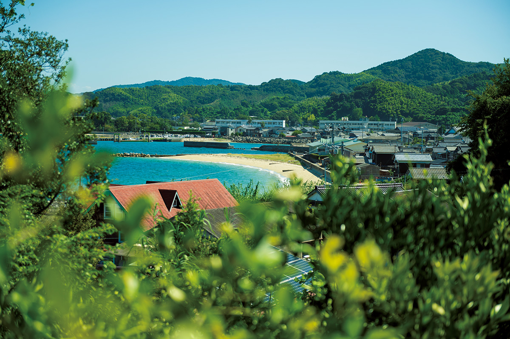
Самое известное новое хозяйство острова открыл человек, ушедший из офиса ради своего дела. Во время свадебного путешествия в Париж он попробовал французский конфитюр и не смог забыть этот вкус. Остров выбрал не случайно: это родина его жены.
Хозяин уверен, что на острове нельзя вести дело только ради денег. Мало просто делать продукт из урожая. Он берёт фрукты, выращенные без пестицидов или с минимумом химии, и такая добавленная ценность, по его словам, поднимает привлекательность всего края.
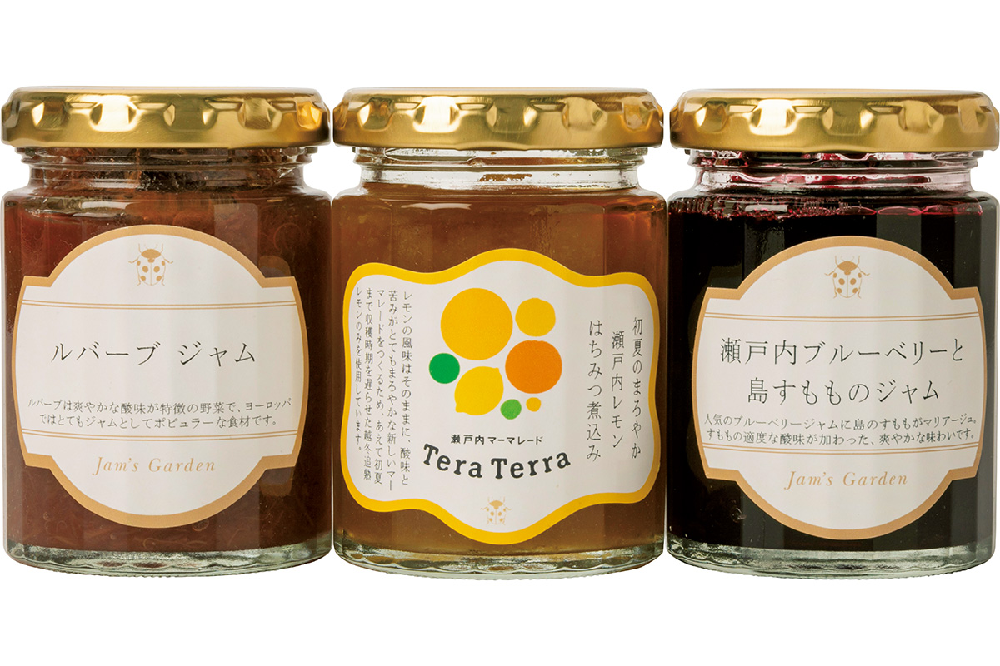
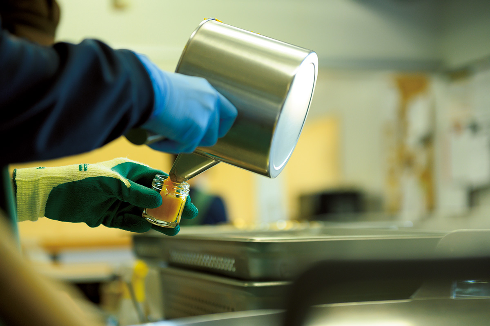
«Несколько десятилетий назад моя бизнес-модель не сработала бы. Но с интернетом можно рассказывать о себе, и всё больше людей приезжает на остров, прочитав о нас. Дальше хотим делиться этим опытом с другими регионами»
хозяин «Сэтоути Джемс Гарден»
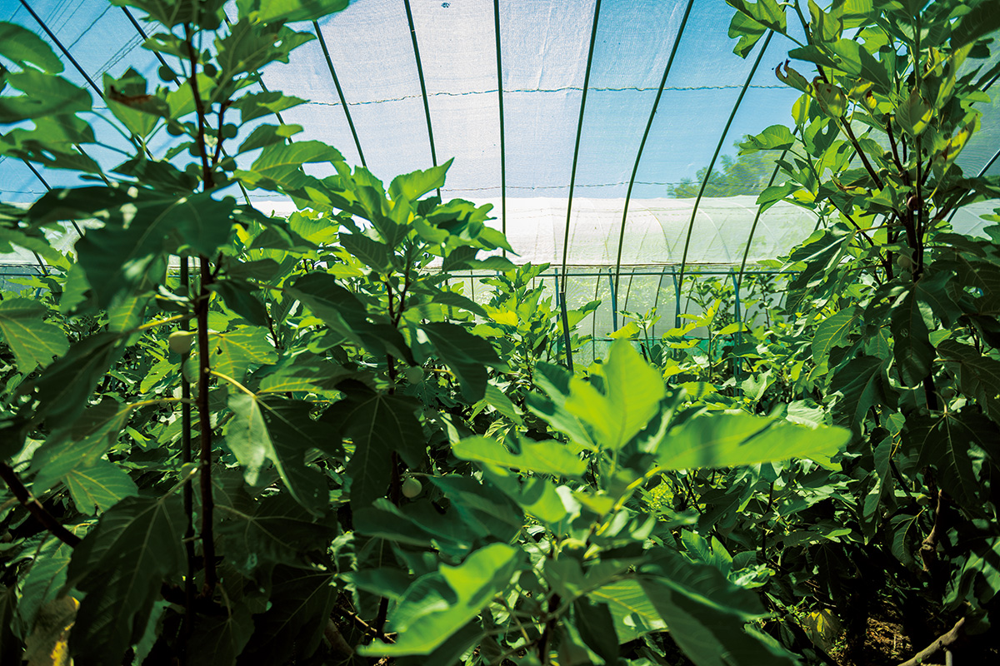
«Сэтоути Джемс Гарден»
- Адрес
- префектура Ямагути, Суо-Осима, Хикума, 331-8
- Телефон
- +81 820-73-0002
- Часы работы
- 10:00–17:30 по выходным и праздникам с марта по ноябрь и ежедневно примерно с 20 июля по 31 августа, в остальное время 10:00–17:00
- Выходные
- среда, четверг (по четвергам открыта только продажа джема)
- Сайт
- jams-garden.com
Виноград
«Мирай Гарден Фарм»: виноград, который едят с кожурой
Туристический виноградник «Мирай Гарден Фарм» держит переселенец, который узнал об острове на мероприятии своей прежней компании. Каждый раз, приезжая сюда, он заводил новых знакомых и в конце концов решил заняться земледелием, к которому давно присматривался.
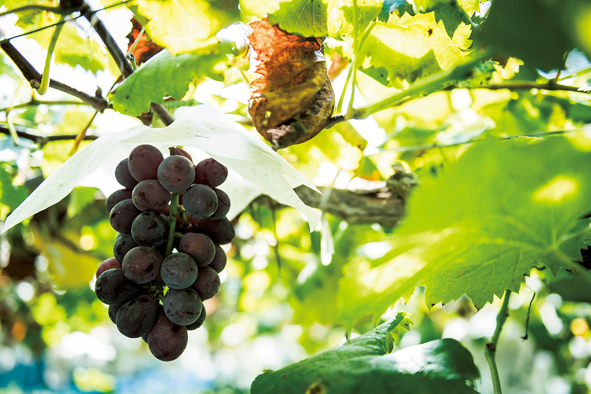
«Местные привели меня на заброшенный участок. Когда мы его расчистили, под зарослями оказались красивые террасные поля. На такой земле, подумал я, можно передать будущему земледелие, с которого начинается жизнь»
хозяин «Мирай Гарден Фарм»
Удобрения здесь только органические, а пестицидов как можно меньше: виноград должен быть безопасным вместе с кожурой. С соседями отношения хорошие: рядом работают другие переселенцы, которые приехали в то же время, а старожилы охотно делятся опытом. Обмениваться мнениями с людьми острова хозяин считает одной из радостей своей жизни здесь.
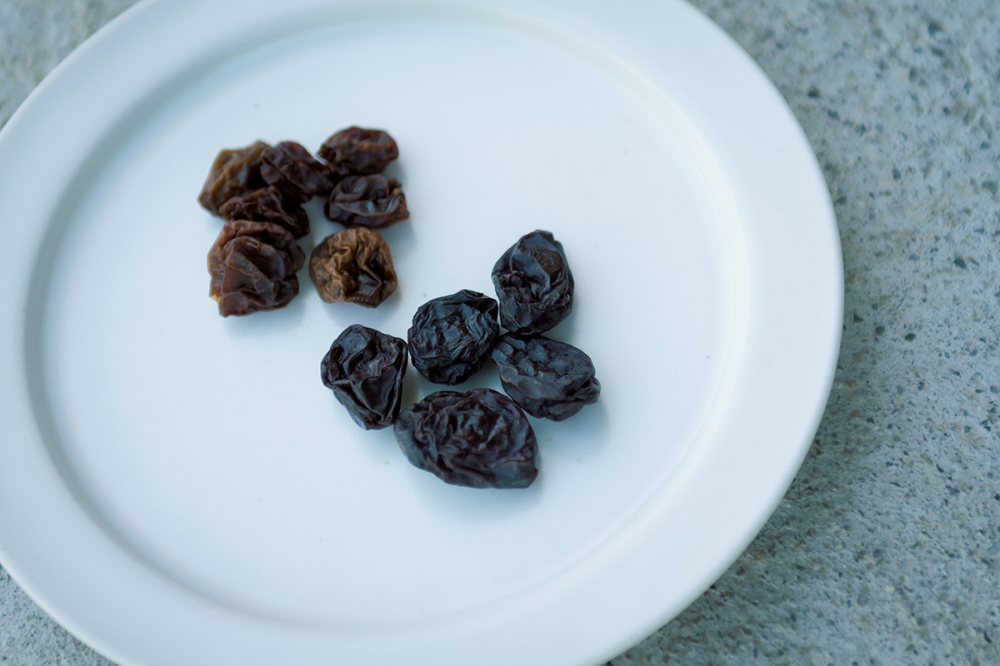
«Мирай Гарден Фарм»
- Адрес
- префектура Ямагути, Суо-Осима, Ниси-Сангама, 2053-1
- Телефон
- +81 90-3979-1371
- Часы работы
- 10:00–17:00, сезон с начала августа до начала октября
- Выходные
- среда
Зима
Мандариновый набэ в «Хикоэмоне»
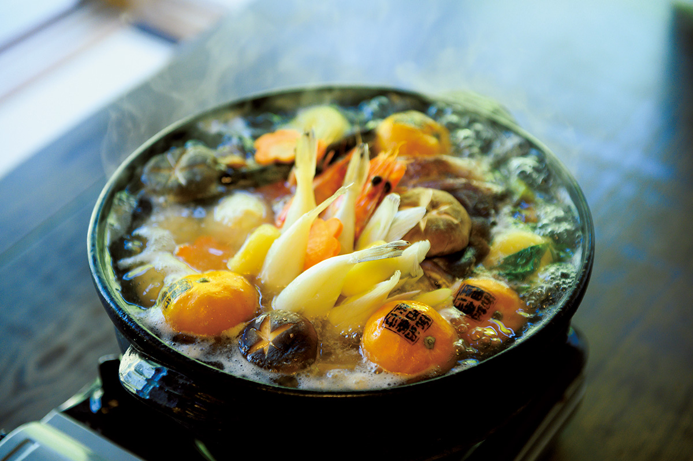
Целые мандарины плавают прямо в котелке. Это «микан-набэ», фирменное блюдо Суо-Осимы. Для него берут только мандарины, выращенные без обработки химикатами, с клеймом, которое ставит туристическая ассоциация острова. Блюдо придумали всем островом, чтобы привлечь гостей. Мандарины едят вместе с кожурой, поэтому остатков пестицидов в них быть не должно. Сезон набэ совпадает со сбором урожая, так что попробовать его можно только зимой, и оно хорошо согревает.
Бульон из местных морепродуктов насыщенный, но лёгкий. По вкусу его можно сдобрить мандариновой пастой с перцем. Набэ подают, в частности, в главном зале ресторана «Осамурай-тяя Хикоэмон».
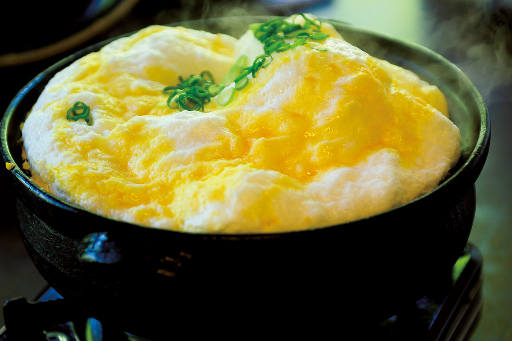
«Осамурай-тяя Хикоэмон», главный зал
- Адрес
- префектура Ямагути, Суо-Осима, Дои, 1094-1
- Телефон
- +81 820-73-1511
- Часы работы
- 11:00–22:00 (последний заказ в 21:00)
- Выходные
- четверг
Мандарины
Сад Вакабаяси: сбор урожая с видом на море
От моста Осима до мандаринового сада Вакабаяси чуть больше пяти минут на машине. Сад стоит на возвышенности в районе Комацу, и здесь тоже обходятся минимумом пестицидов и органическими удобрениями. Хозяин сада рассказывает, что без химии на деревьях иногда заводятся насекомые, но даже испорченные плоды не пропадают: их пускают на удобрение. Деревья продувает морской ветер, а растут они на солнце и на природных удобрениях.
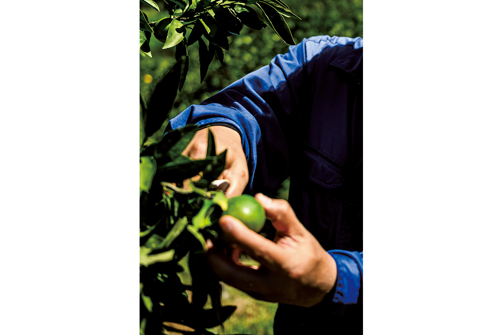
Собирать мандарины, глядя на спокойное Внутреннее море, очень приятно, и это время хорошо снимает напряжение.
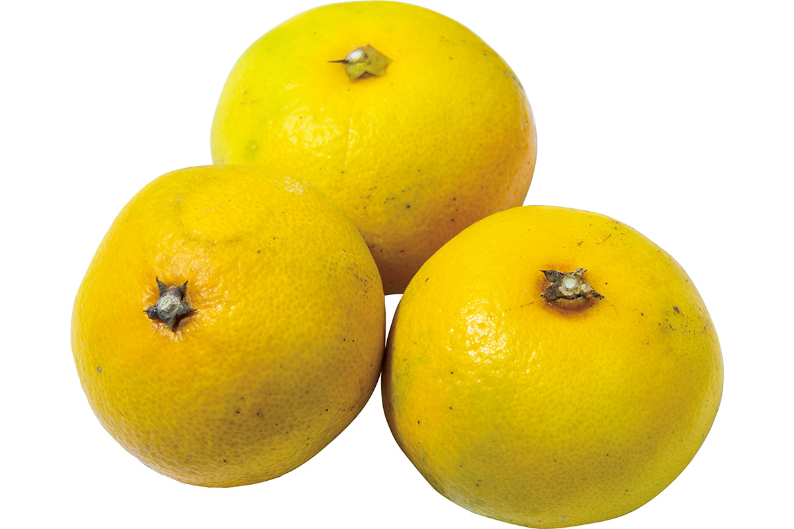
Мандариновый сад Вакабаяси
- Адрес
- префектура Ямагути, Суо-Осима, Комацу, Наканоки, 808
- Телефон
- +81 90-9734-6844
- Часы работы
- 8:00–17:00 (последний вход в 16:00), сезон с начала октября до начала или середины декабря, пока не закончатся плоды
- Выходные
- в сезон без выходных
- Сайт
- suouoshima.com
Храм
Кафе при храме Дзюгэн-дзи
Раз уж вы приехали на Суо-Осиму, стоит узнать не только его вкус, но и культуру. Площадь острова всего около 140 км², и всё интересное здесь рядом. Проект «Суо-Осима Отэра-кафе» получил японскую премию «Гуд дизайн». Его автор размышляет о том, каким может быть храм сегодня, и хочет дать людям время побыть наедине с собой, о котором в будничной суете легко забыть.
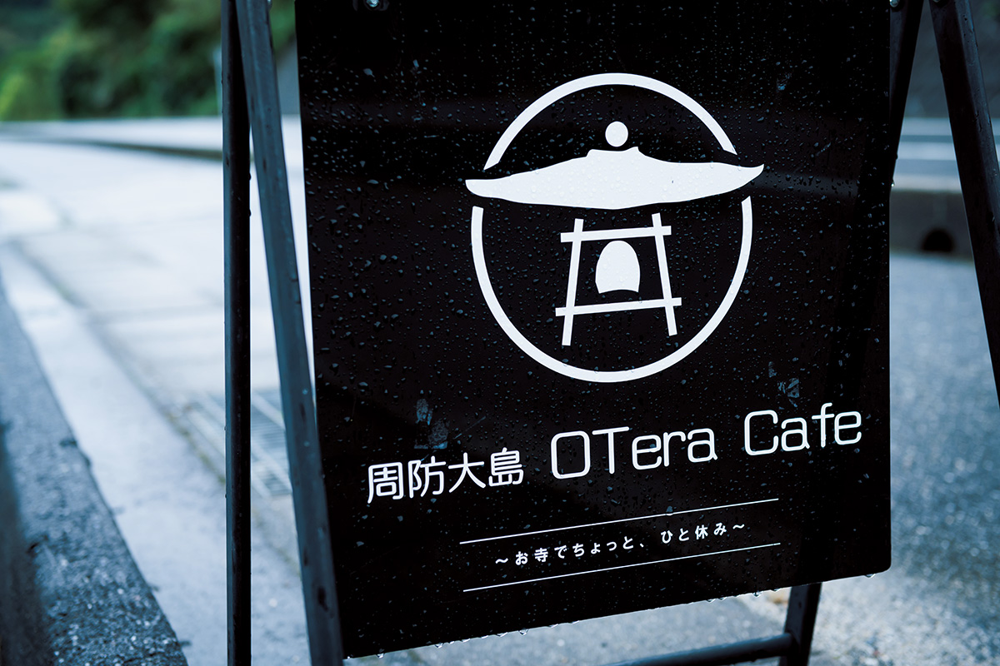
«Кафе делает храм ближе. Для гостей с материка он становится третьим местом, не домом и не работой, а для жителей острова местом встреч. Хотелось бы, чтобы так сложилось»
автор проекта «Отэра-кафе»
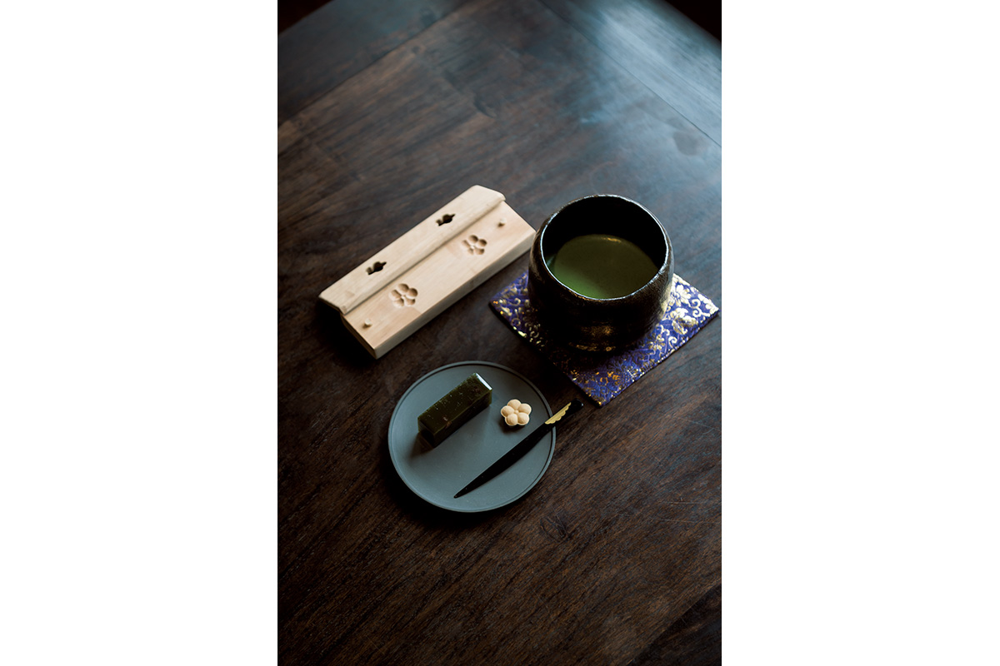
«Суо-Осима Отэра-кафе»
- Адрес
- префектура Ямагути, Суо-Осима, Юра, 587, на территории храма Дзюгэн-дзи
- Телефон
- +81 50-5472-3338
- Часы работы
- суббота и воскресенье, сеансы в 12:30, 14:00 и 15:30, только по предварительной записи и оплате
- Выходные
- с понедельника по пятницу
- Сайт
- otera-cafe.com
Ремесло
Палочки из закопчённого бамбука
Лавка «Янэёри-но хасия» делает палочки для еды из «сусутакэ», закопчённого бамбука. Такой бамбук годами стоял в соломенной крыше старого дома над очагом, дым пропитывал его, и он становился прочнее. От первого раскола ствола до готовой пары палочек иногда проходит десять лет. В 2015 году палочки отсюда взяли на Всемирную выставку в Милане: ими ели фугу.
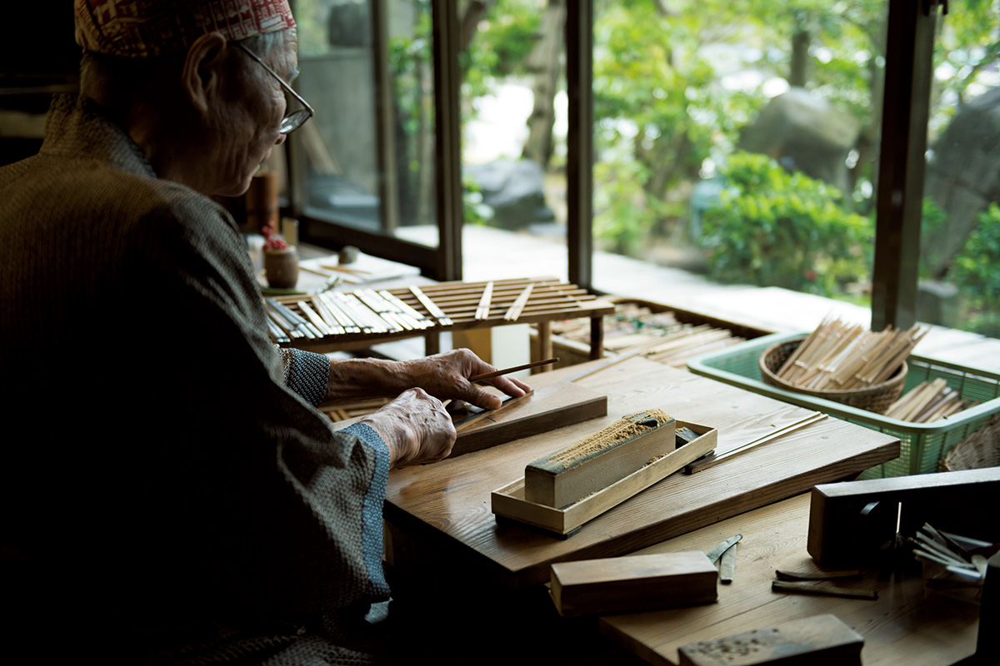
«Хочу делать палочки, которые хоть немного украсят жизнь того, кто ими ест»
мастер лавки
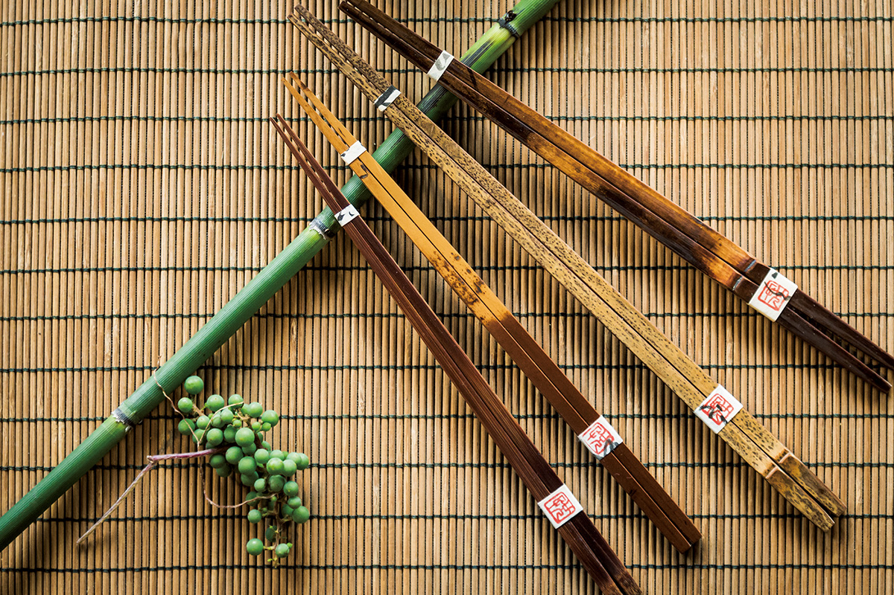
«Янэёри-но хасия»
- Адрес
- префектура Ямагути, Суо-Осима, Агэнсё, Рюгасаки
- Телефон
- +81 820-77-0029
- Часы работы
- уточняйте по телефону
Музей
Цунэити Миямото: учёный, который шёл пешком
На острове родился этнограф Цунэити Миямото, и его архив хранит Мемориальный музей Цунэити Миямото. Четверть жизни учёный провёл в дороге и прошёл расстояние, равное четырём оборотам вокруг Земли. Одних фотографий он оставил 100 000.
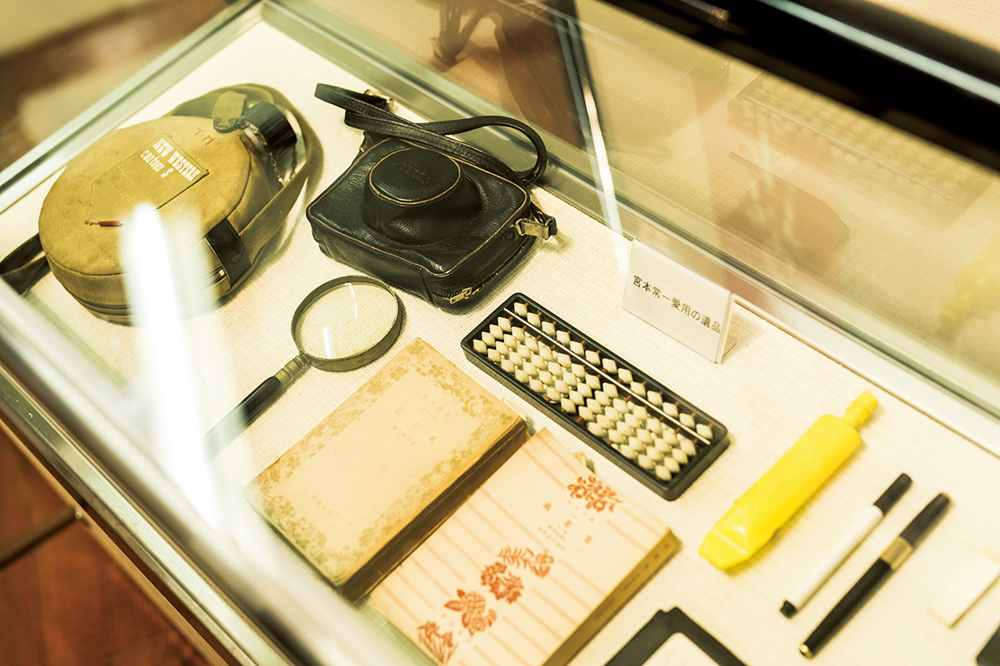
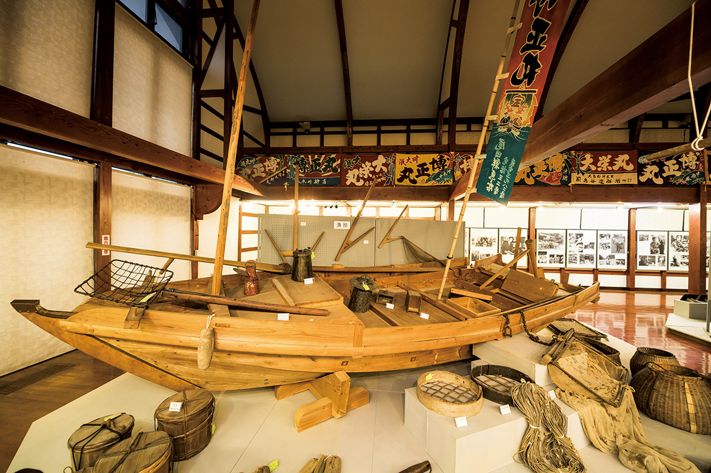
«Сегодня всё можно найти в интернете. Но очень хочется, чтобы люди ценили то, что делал Миямото: идти, смотреть и убеждаться своими глазами»
хранитель музея
Мемориальный музей Цунэити Миямото
- Адрес
- префектура Ямагути, Суо-Осима, Хирано, 417-11
- Телефон
- +81 820-78-2514
- Часы работы
- 9:30–18:00 (вход в экспозицию до 17:30)
- Выходные
- среда (если это праздник, то следующий день), новогодние праздники
- Сайт
- towatown.jp
Рыба
«Кэй»: сашими, которое блестит
На рыбу-саблю, по-японски «тати-уо», приходится 60% улова префектуры. Осенью и зимой её добывают в проливе Суо, и «кагами-мори», «зеркальная» подача этой рыбы, стала блюдом, которое стоит попробовать на острове. Ресторан «Кэй» славится именно такой тарелкой из свежей рыбы.
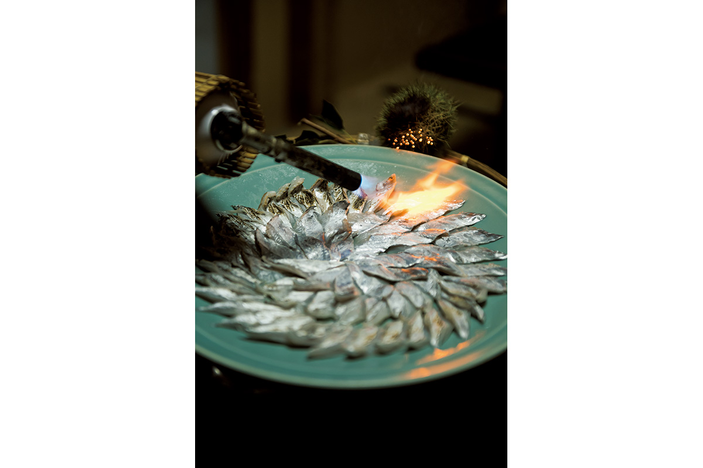
Филе рыбы-сабли отбивают маленьким мандарином с надрезанной кожурой и быстро обжаривают на огне. Сначала её едят с солью, потом с соусом «понзу» и тёртой редькой с перцем.
Ресторан «Кэй»
- Адрес
- префектура Ямагути, Суо-Осима, Нагасаки, 1958-31
- Телефон
- +81 820-78-2222
- Часы работы
- 11:00–14:00, 17:00–21:00
- Выходные
- четверг
- Сайт
- suouoshima.com
Ночлег
«Исинабэ-тэй»: столетний дом у моря
Гостевой дом «Исинабэ-тэй» стоит недалеко от моря в районе Ёкоми. Это перестроенный жилой дом, которому сто лет. Он принимает одну компанию в день и славится ужинами из местной рыбы и овощей. В пристройке много тёплого дерева, а в старой части дома сохранилось уютное настроение прежних времён. Из комнат видно Внутреннее море, и усталость дороги быстро проходит.
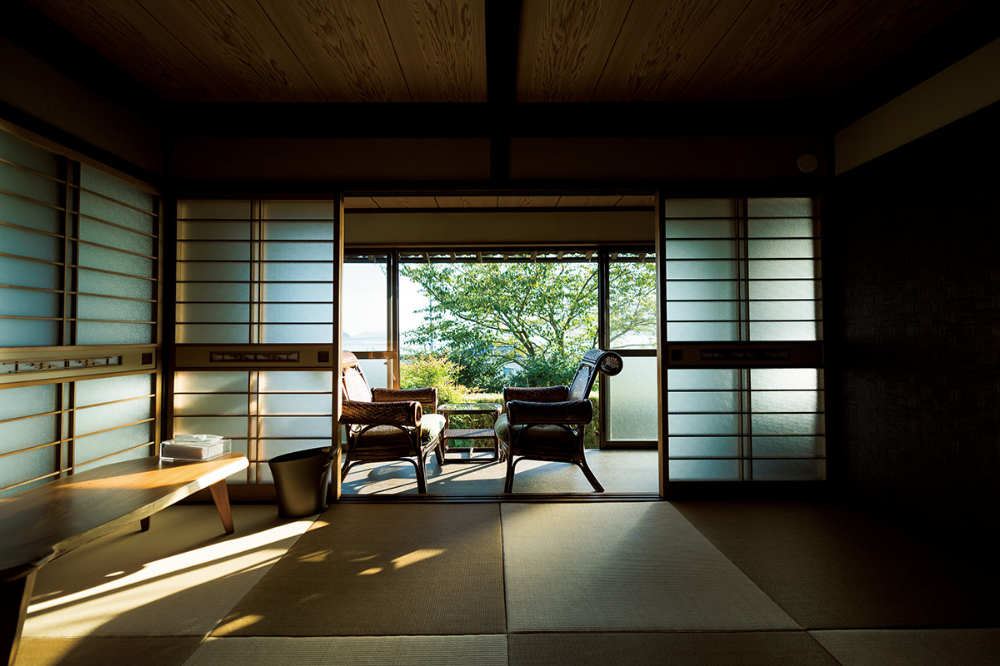
Ночь с ужином и завтраком стоила 15 000 иен без налога в 2020 году, гостей принимают от двух человек.
«Исинабэ-тэй»
- Адрес
- префектура Ямагути, Суо-Осима, Ёкоми, 139
- Телефон
- +81 70-2354-1478
- Часы работы
- заезд с 16:00, выезд до 10:00
- Выходные
- вторник, среда, четверг
- Цены / Вход
- ночь с ужином и завтраком 15 000 иен без налога, только от двух гостей
- Сайт
- ishinabetei.com
Море
На каяке к соседним островкам
Прокат «Сэтоути Паддлинг» работает в посёлке Кодомари, откуда через море виден соседний большой остров Сикоку. Здесь можно с нуля освоить морской каяк и сапборд. Когда привыкнешь к веслу, можно выйти из бухты на запад и примерно за два часа обойти два соседних островка. Плавать от острова к острову по тихому Внутреннему морю очень приятно.
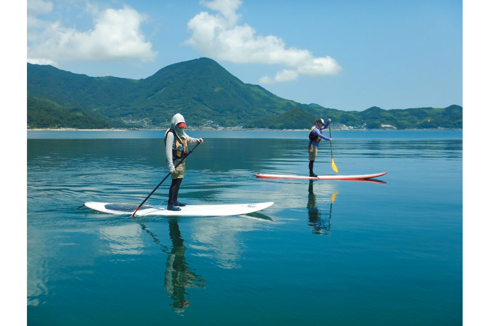
«Сэтоути Паддлинг»
- Адрес
- префектура Ямагути, Суо-Осима, Кодомари, у автобусной остановки
- Телефон
- +81 50-3700-1731
- Часы работы
- 9:00–19:00
- Выходные
- без выходных
Вид
Гора Дакэ: весь остров с вершины
Центр Суо-Осимы занимают горы, и лучшие виды открываются сверху. Цепь из четырёх вершин тянется от северо-запада острова, её называют «Сэтоути-Альпами», и люди поднимались сюда ради вида с древних времён. Замыкает цепь гора Дакэ. В ясный день отсюда видно посёлки вдоль берега, россыпь островов Внутреннего моря и даже горы Сикоку.
Отец Цунэити Миямото, как рассказывают, советовал сыну в каждом новом месте первым делом подняться повыше и осмотреть окрестности: тогда не заблудишься. Вокруг горы Дакэ проложены прогулочные тропы «Леса долголетия», а на вершину можно подъехать на машине.
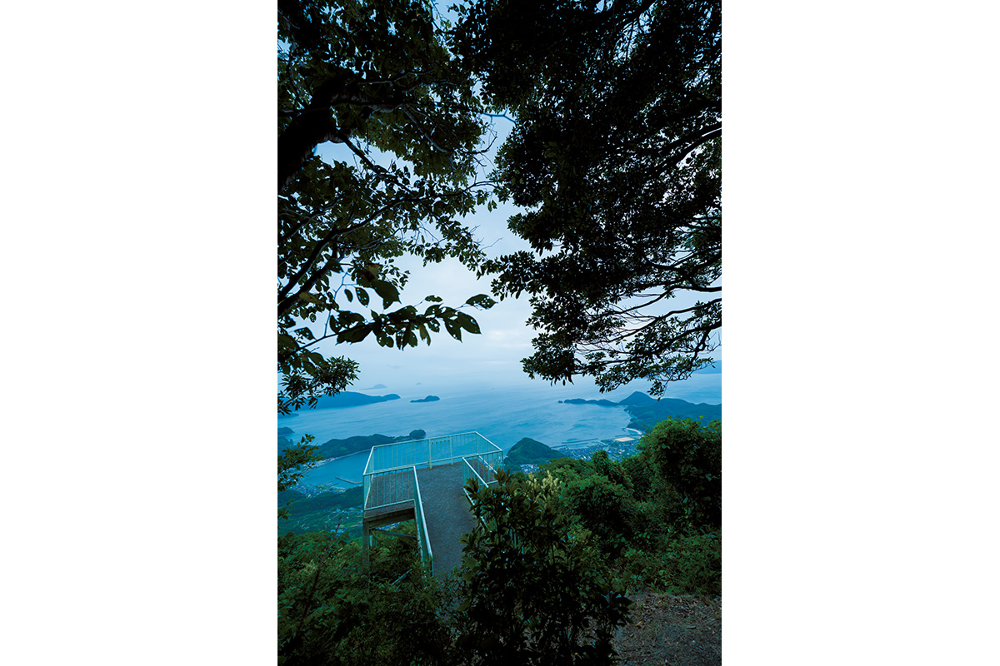
Смотровая площадка на вершине горы Дакэ
- Адрес
- префектура Ямагути, Суо-Осима, Хигаси-Агэнсё
- Телефон
- +81 820-79-1003 (отдел торговли и туризма администрации Суо-Осимы)
- Сайт
- oidemase.or.jp
Дорога
«Осима Оранж-роуд»: море за каждым поворотом
«Осима Оранж-роуд» это сеть сельских дорог, по которым грузовики возят мандарины. Её легко узнать по оранжевым ограждениям, а тянется она по всему острову. Мало кто знает, что это одно из лучших мест для видов. Особенно хороша дорога, которая спускается с гор к району Агэнсё: вид сменяется видом. Если захочется полюбоваться, остановите машину там, где это безопасно.
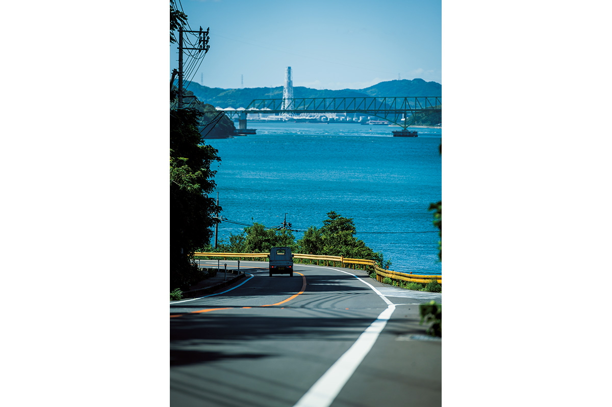
Фото: Хиромицу Ясуи.